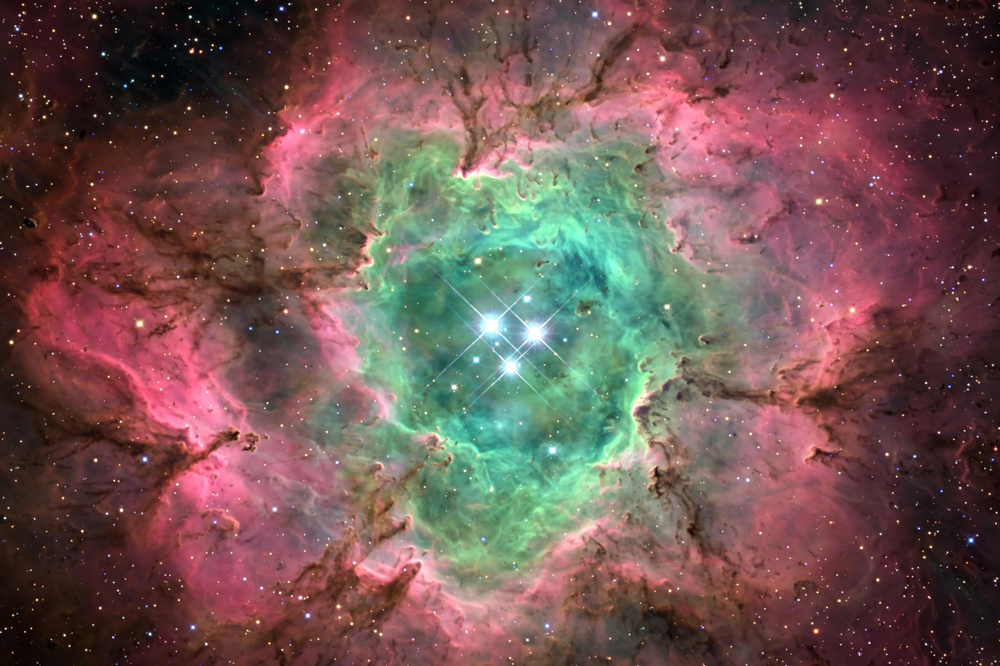

The Messier objects are a set of 110 astronomical objects catalogued by the French astronomer Charles Messier in his Catalogue des Nébuleuses et des Amas d'Étoiles ("Catalogue of Nebulae and Star Clusters"), published between 1771 and 1781. Messier, a comet hunter, compiled the list of fuzzy objects that were not comets so that he and others would not waste time on them; ironically, the catalogue of "non-comets" — galaxies, nebulae, and star clusters — became far more famous than his comet discoveries.
The catalogue includes celebrated objects such as the Andromeda Galaxy (M31), the Orion Nebula (M42), the Ring Nebula (M57), the Pleiades (M45), the Whirlpool Galaxy (M51), and the Crab Nebula (M1), the first entry, catalogued in 1758. Entries M104–M110 were added in the 20th century from Messier's notes.
All Messier objects are visible in binoculars from northern latitudes, making the catalogue a rite of passage for amateur astronomers; the "Messier marathon" challenges observers to view all 110 in a single night, possible around the March new moon.